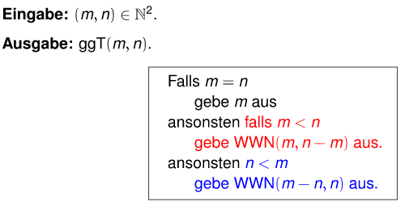

Während Ihr darauf wartet, dass es beginnt..
Java
Object Oriented Programming
Florian Kluge, Moritz Schulz
- November 2021
Florian.Kluge@mailbox.tu-dresden.de
Moritz.Schulz2@mailbox.tu-dresden.de
Was wir heute machen
- Programme betrachten
- For-Schleifen II
- Funktionen
Florian Kluge
Florian.Kluge@mailbox.tu-dresden.de
Moritz Schulz
Moritz.Schulz2@mailbox.tu-dresden.de
Quick info about this course
- bitte abmelden / entschuldigen, wenn ihr nicht kommt
- zwei Mal in Folge unentschuldigt fehlen => ausgetragen
- praktische Aufgaben- und Beispiel-basierte Lernweise
- wir laufen herum und gucken, dass ihr zurecht kommt
- bitte, fragt gern, jederzeit
- auch per E-Mail / via Kursseite
- uns geht es darum, alle mitzunehmen
Stay up to date
- die E-Mails der TUD regelmäßig überprüfen
- z.B. Bekanntgabe der Veröffentlichung der Folien
- auf der Seite des Programmierkurses
Programme betrachten: 1
- Was ist die letzte ausgegebene Zahl?
public class Programm1 {
public static void main(String[] args) {
for(int i = 0; i <= 22; i++) {
System.out.println(i);
}
}
}
Programme betrachten: 1 (Lösung)
public class Programm1 {
public static void main(String[] args) {
for(int i = 0; i <= 22; i++) {
System.out.println(i);
}
}
}
Antwort: 22
Denn wenn i == 22, ist i <= 22 wahr
Programme betrachten: 2
- Was ist die letzte ausgegebene Zahl?
public class Programm2 {
public static void main(String[] args) {
for(int i = 0; i < 22; i += 1) {
System.out.println(i);
}
}
}
Programme betrachten: 2 (Lösung)
public class Programm2 {
public static void main(String[] args) {
for(int i = 0; i < 22; i += 1) {
System.out.println(i);
}
}
}
Antwort: 21
Denn wenn i == 21, ist i < 22 wahr.
Für i == 22, ist i < 22 nicht mehr wahr, die Schleife ist unterbrochen.
Programme betrachten: 3
- Was ist die letzte ausgegebene Zahl?
public class Programm3 {
public static void main(String[] args) {
for(int i = 0; i < 22; i += 3) {
System.out.println(i);
}
}
}
Programme betrachten: 3 (Lösung)
public class Programm3 {
public static void main(String[] args) {
for(int i = 0; i < 22; i += 3) {
System.out.println(i);
}
}
}
- Antwort: 21
i ist zu Beginn 0i wird nach jedem Durchlauf um 3 erhöht- für
i gleich 21, trifft i < 22 zu
- als nächstes wird
i += 3 ausgeführt
- für
i gleich 24 trifft i < 22 nicht mehr zu
Programme betrachten: 4
public class Programm4 {
public static void main(String[] args) {
int[] numbers = {1,2,3,4,5,6};
for (int i = 0; numbers[i] > 0; i++) {
System.out.println(i);
}
}
}
- Was tut das Programm?
- Was gibt es als erstes aus?
- Was gibt es als letztes aus?
- Passiert etwas besonders?
Programme betrachten: 4 (Lösung)
- Ausgabe: 0 (der erste Wert von
i)
- Letzte Ausgabe: 5 (denn wenn
i == 5: numbers[5] > 0)
- Danach: ArrayIndexOutOfBoundsException
- denn die Bedingung
numbers[6] > 0
Arrays und For-loops
- angenommen, wir wollen alle Elemente in einem Array ausgeben
- Sollten wir uns das
i nicht sparen können?
String[] namen = {"Madeline", "Kim", "John"}
for(int i = 0; i < namen.length; i++) {
String name = namen[i];
System.out.println(name);
}
Arrays und For-loops
- verkürzte Syntax
- “for each” Loop
String[] namen = {"Madeline", "Kim", "John"}
for(String name : namen) {
System.out.println(name);
}
Arrays und For-loops
- es gibt auch
for-each Loops
- diese
for each Loop führt eine Iteration pro Array-Element aus
- dadurch sparen wir uns den Index
// 'für jedes Element in Array tu dies..'
for(datentyp variableName : array) {
// do something!
}
Arrays und For-Each-loops
Aufgaben
String[] wochentage = {"Montag", "Dienstag", "Mittwoch", "Donnerstag", "Freitag"};
for(String tag : wochentage) {
System.out.println(tag);
}
Funktionen
- so sieht eine Funktion aus:
public static void funktionsName() {
// tue etwas
}
public, static, void erklären wir noch
Funktionen
- Funktionen erlauben uns Code “auszulagern” und an verschiedenen Stellen aufzurufen
public class Programm {
public static void main(String[] args) {
System.out.println("~~~~~~~~~~~~~");
System.out.println("-- Hallo --");
System.out.println("~~~~~~~~~~~~~");
System.out.println("~~~~~~~~~~~~~");
System.out.println("-- Hallo --");
System.out.println("~~~~~~~~~~~~~");
if (true) {
System.out.println("~~~~~~~~~~~~~");
System.out.println("-- Hallo --");
System.out.println("~~~~~~~~~~~~~");
}
}
}
Funktionen
- Funktionen erlauben uns Code auszulagern
- jedes Mal, wenn er ausgeführt werden soll
- rufen wir stattdessen die Funktion auf
- Wie viele Funktionen hat das Programm?
public class Programm {
public static void main(String[] args) {
schild(); // Funktion mit Name schild wird aufgerufen
schild(); // Funktion mit Name schild wird aufgerufen
if (true) {
schild(); // Funktion mit Name schild wird aufgerufen
}
}
public static void schild() {
System.out.println("~~~~~~~~~~~~~");
System.out.println("-- Hallo --");
System.out.println("~~~~~~~~~~~~~");
}
}
Funktionen: Aufgabe
- Aufgabe: verändert das Programm, sodass es eine Funktion nutzt!
- Hinweis: Funktionen haben die Struktur:
public static void funktionsName() { … }
- Hinweis: Welcher Code wird wiederholt?
public class Programm {
public static void main(String[] args) {
String name;
name = "Alex";
if (name == "James") {
System.out.println("Das Passwort ist: 478329");
} else {
System.out.println("Du bist nicht James!");
}
if (100 > 20) {
name = "Alex";
if (name == "James") {
System.out.println("Das Passwort ist: 478329");
} else {
System.out.println("Du bist nicht James!");
}
}
}
}
Funktionen: Aufgabe: Lösung
public class Programm {
public static void main(String[] args) {
geheimnis();
if (100 > 20) {
geheimnis();
}
}
public static void geheimnis() {
String name = "Alex";
if (name == "James") {
System.out.println("Das Passwort ist: 478329");
} else {
System.out.println("Du bist nicht James!");
}
}
}
Funktionen
- Helfen uns, Code zu sparen und uns weniger zu wiederholen.
- Aktuell tun Funktionen immer das Gleiche.
- Funktionen, die sich verschieden verhalten können, wären praktischer.
- zum Beispiel eine Funktion, die von einer Zahl die Wurzel berechnet
Funktionen
- Wir können außerdem Parameter bzw. Werte an Funktionen übergeben
- Parameter sind für die Funktion dann wie Variablen
public class Programm {
public static void main(String[] args) {
funktionsName("Hello World!");
}
public static void funktionsName(String aussage) {
System.out.println(aussage); // prints Hello World!
}
}
Funktionen
- diese Parameter können beliebig lang und von verschiedenen Datentypen sein
public class Programm {
public static void main(String[] args) {
funktionsName(8, 9);
// Ausgabe: "Der Nachfolger von 8 ist 9"
}
public static void funktionsName(int number, int successor) {
System.out.println("Der Nachfolger von " + number + " ist " + successor);
}
}
Funktionen
- Funktionen können auch Werte zurückgeben
- mit
return
- aus
void wird der Datentyp
- denn
void würde heißen, dass keine Werte zurückgegeben werden
public class Programm {
public static void main(String[] args) {
int c = sum(3, 5);
System.out.println(c); // prints 8
}
public static int sum(int a, int b) {
return a + b;
// Note: Nichts unterhalb von "return" wird ausgeführt
}
}
Eine Funktion fürs Volumen
public class Aufgabe {
public static void main(String[] args) {
float volumen = wuerfel(3.0f);
System.out.println(volumen);
}
public static float wuerfel(float a) {
return a*a*a;
}
}
- Was wird das Programm ausgeben?
- Schreibe eine Funktion, die das Volumen eines Quaders berechnet.
- Herausforderungen:
- Volumen einer Pyramide (Hinweis:
1.0f/3.0f)
- Volumen eines Zylinders
- eine weitere Funktion, die aus den Parametern und dem Ergebnis eine Rechnung schreibt und ausgibt
Eine Funktion fürs Volumen: Lösung
public class Programm {
public static void main(String[] args) {
float volumen = quader(3.0f, 2.0f, 5.0f);
System.out.println(volumen);
}
public static float quader(float a, float b, float c) {
return a*b*c;
}
}
Rekursion
- Iterationen können nicht nur durch Schleifen erzeugt werden
- wenn sich eine Funktion selbst aufruft, heißt das Rekursion
- wenn es keinen Fall gibt, für den die Funktion sich nicht mehr selbst aufruft (kein Abbruchkriterium):
- ist das Programm ähnlich wie eine Endlosschleife
public static int recursion() {
return 1 + recursion(); // ! hat kein Abbruchkriterium
}
Rekursion: Summe
- Mit der Rekursion können wir auch eine Summe rekursiv berechnen
- Ziel: Summe aller Ganzzahlen von 0 bis a: {\color{White}\sum_{i=0}^{\text{max}} i}
- mathematisch: \text{sum}(0) = 0,\; \text{sum}(x) = x+\text{sum}(x-1)
- Rekursion als Alternative zu Loops / Schleifen
public static int sum(int max) {
if(max > 0) {
return max + sum(max - 1);
} else {
return max;
}
}
- Lösung mit Bezugnahme auf Lösung des kleineren Problems
Rekursion: Summe
public class Programm {
public static void main(String[] args) {
System.out.println(sum(3));
}
public static int sum(int max) {
if(max > 0) {
return max + sum(max - 1);
} else {
return max;
}
}
}
sum(3) => 3 + sum(2) => 3 + (2 + sum(1)) => 3 + (2 + (1)) => 3 + (3) => 6
Rekursion: ggT aus der Vorlesung
- Wechselwegnahmealgorithmus
- der ggT(a, b) (größte gemeinsame Teiler) lässt sich ebenfalls rekursiv modellieren
- Aufgabe: übersetzen in ein Java-Programm
- Der Screenshot beschreibt eine Funktion WWN

public class GGTRechner {
public static void main(String[] args) {
System.out.println(WWN(16,10));
}
public static int WWN(int a, int b) {
if(m == n) {
return a;
} else if (m < n) {
return WWN(m, n-m);
} else {
return WWN(m-n, n);
}
}
}
Nächste Stunde
- Grundlagen der objektorientierten Programmierung